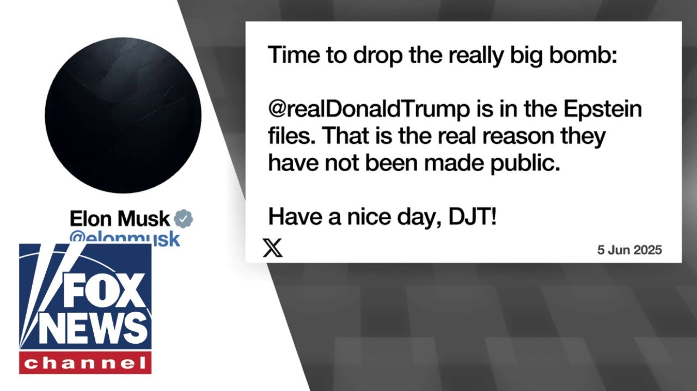

【突发：马斯克在爱泼斯坦文件中投下“重磅炸弹”】
Summary: The feud between President Trump and Elon Musk escalates as they exchange sharp criticisms, with Musk revealing Trump's alleged connection to the Epstein files.
摘要： 特朗普总统与埃隆·马斯克的争执升级，双方言辞激烈，马斯克更揭露特朗普与爱泼斯坦文件的关联。

⏱️ Estimated Reading Time: 3 min
📚 高考3500生词 📚 雅思生词 📚 托福生词 📚 GRE生词 📚 UP主推荐生词
A big ugly battle over the big beautiful bill.
一场围绕宏伟法案的丑陋争斗。
President Trump and Elon Musk's war of words reaching a fever pitch today and today President Trump was asked about that.
特朗普总统与埃隆·马斯克的口水战今日达到白热化，特朗普今日被问及此事。
He hasn't said bad about me personally, but I'm sure that'll be next.
他尚未对我个人恶语相向，但我确信接下来会。
But I'm I'm very disappointed in Elon.
但我对埃隆非常失望。
I've helped Elon a lot.
我曾给予埃隆许多帮助。
I'll be honest.
实话实说。
I think he misses the place.
我想他怀念这里。
I think he got out there and all of a sudden he wasn't in this beautiful Oval Office and he was and he's got nice offices, too.
我想他走出去后，突然发现自己不在这个美丽的椭圆形办公室了，尽管他也有不错的办公室。
But there's something about this one and it didn't take long for Mus to respond taking to X to say without me Trump would have lost the election.
但这个办公室有些特别，马斯克很快在X上回应称，没有我特朗普会输掉选举。
Dems would control the House and Republicans would be 5149 in the Senate.
民主党将控制众议院，共和党在参议院将只有51比49。
Such ingratitude.
如此忘恩负义。
And that was all it took to get the back and forth going.
这便引发了双方的你来我往。
President Trump threatening Musk's government contracts, writing on Truth Social.
特朗普总统在Truth Social上发文威胁取消马斯克的政府合同。
The easiest way to save money in our budget, billions and billions of dollars, is to terminate Elon's governmental subsidies and contracts.
节省预算中最简单的方法，省下数十亿美元，就是终止埃隆的政府补贴和合同。
I was surprised that Biden didn't do it.
我惊讶于拜登没有这么做。
And in another post, Elon was wearing thin, wrote Trump.
特朗普在另一篇帖子中写道，埃隆的耐心正在耗尽。
I asked him to leave.
我让他离开。
I took away his EV mandate that forced everyone to buy electric cars that nobody wanted, that he knew for months was I was going to do.
我取消了他的电动汽车强制令，该法令强迫所有人购买无人问津的电动车，而他数月前就知道我会这么做。
And he just went crazy.
然后他就疯了。
It did not stop there though.
然而事情并未止步于此。
Elon writing, "Time to drop the really big bomb.
埃隆发文称：“是时候投下真正的重磅炸弹了。
Donald Trump is in the Epstein files.
唐纳德·特朗普在爱泼斯坦文件中。
That is the real reason they have not been made public.
这才是文件未公开的真正原因。
Have a nice day.
祝你有愉快的一天。
DJT seems a Rubicon.
特朗普似乎是一条卢比孔河。
That Elon Musk has crossed.
一条埃隆·马斯克已经跨越的河。
That it appears it's hard to see a path forward for these two to repair their relationship.
看来这两人修复关系的道路已难寻觅。
This is not a story that anyone was looking for.
这不是任何人期待的故事。
perhaps somewhat predictable with two big personalities.
或许两位大人物之间的冲突本就可预见。
Hey, it's Will Kaine.
嘿，我是威尔·凯恩。
Click here to subscribe to the Fox News Channel on YouTube.
点击此处订阅YouTube上的福克斯新闻频道。
It's the best way to get our latest interviews and highlights.
这是获取我们最新采访和精彩内容的最佳方式。
and click to subscribe to the Will Kane podcast for full episodes right
点击订阅威尔·凯恩播客，收听完整剧集。